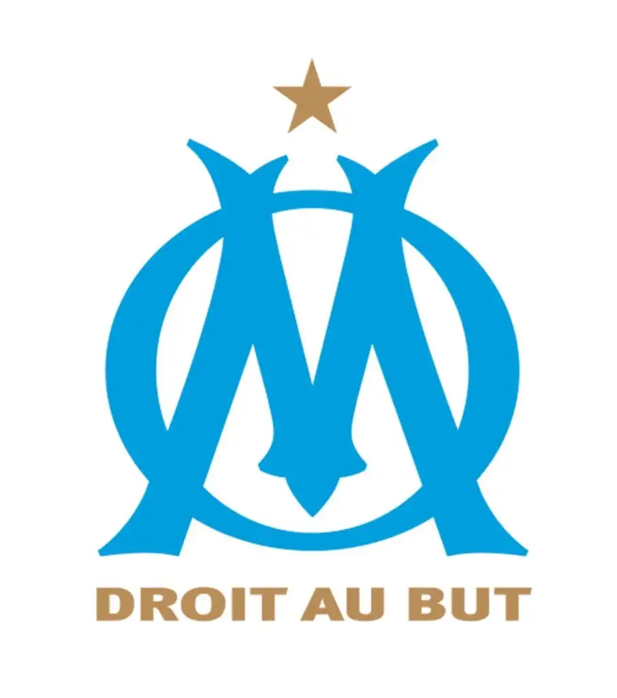

Mes Projets

Pokédex
Ce projet consistait à créer une application web permettant d'afficher une liste de Pokémon avec leur image,
ID, nom et types en utilisant PHP et MySQL.
Lorsque l'utilisateur clique sur un Pokémon, il sera redirigé vers une page détaillée affichant
sa description, sa taille, son poids et ses types en utilisant comme outils phpMyAdmin et Visual Studio.

Site personnel
Ce projet consistait à réaliser un site web de A à Z , qui consistait à faire un CV en HTML/CSS.
Lors de ce projet, j'ai pu utiliser l’IDE du nom de Visual Studio Code, ce qui me permettait de pouvoir coder
mon site.